Mevaa Organic Farm, Batticaloa
Plants, trees &
garden landscaping.
Flower plants, vegetable plants, fruit trees and garden landscaping for homes, businesses, farms and outdoor spaces.
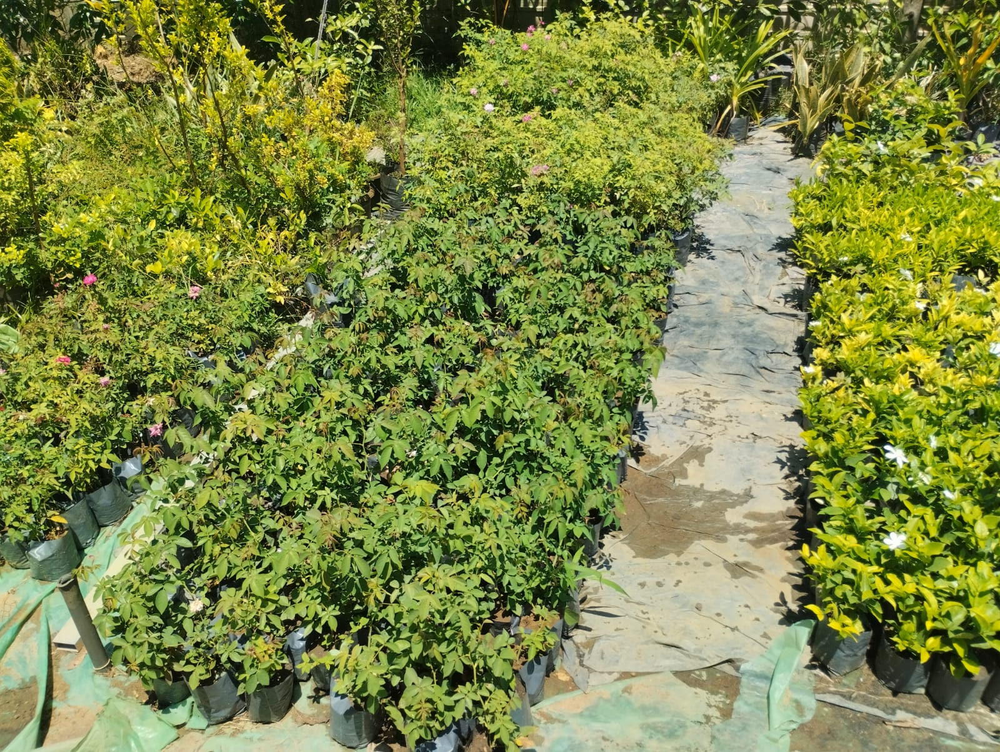
joyEVERY DAY
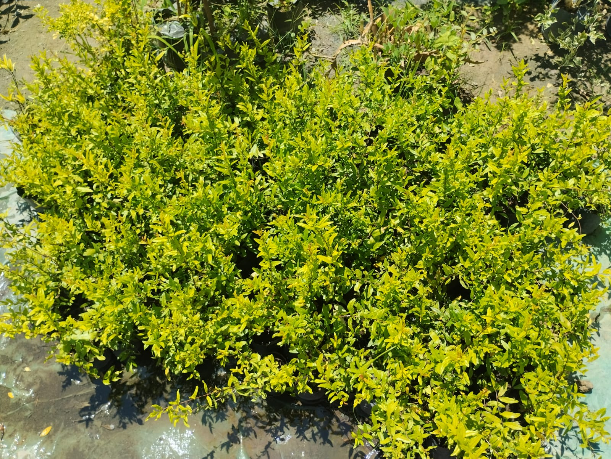
A PLACE TO PAUSE & GROWLocal farm and plant nursery
Plants, trees &
garden solutions.
Mevaa Organic Farm is a local organic farm and plant nursery in Batticaloa, Sri Lanka, offering flower plants, vegetable plants, fruit trees and gardening solutions for homes, businesses, farms and outdoor spaces.
We also provide garden landscaping services in Batticaloa, helping customers create beautiful, green and well-maintained gardens.
Come visit us →Flower, vegetable & fruit plants
Explore plants &
fruit trees.
Mevaa Organic Farm provides vegetable plants for home gardens and farming, encouraging local, sustainable growing of fresh vegetables.
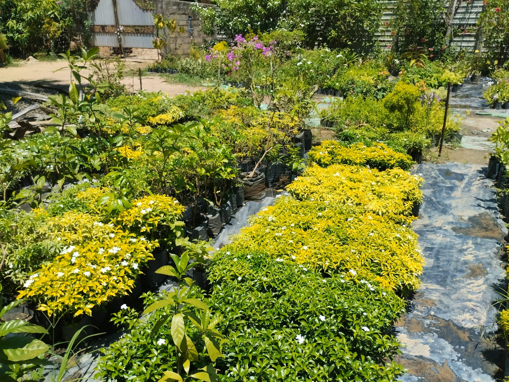
01HOME, OFFICE & OUTDOORFlower plants in Batticaloa↗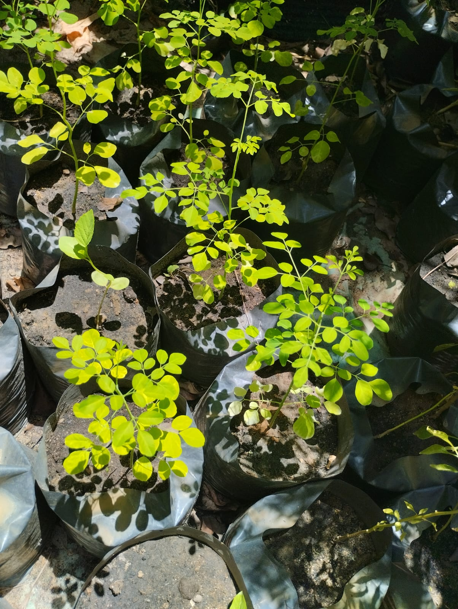
02HOME GARDENS & FARMINGVegetable plants↗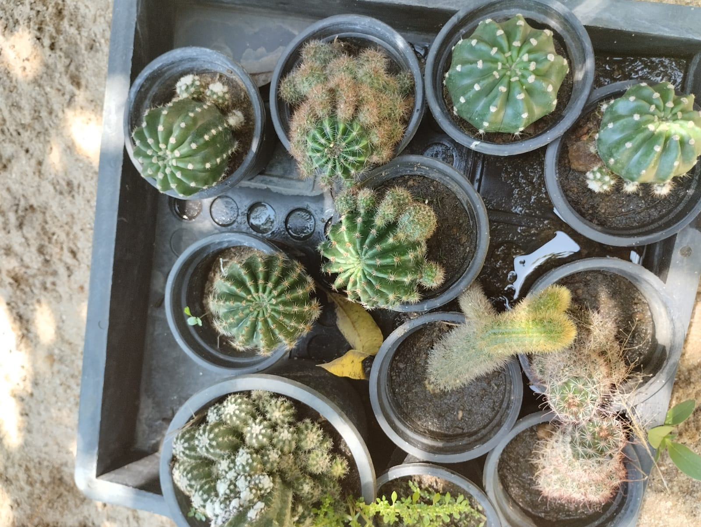
03HOME, FARM & COMMERCIALFruit trees in Batticaloa↗Flower plants suit home gardens, offices, hotels, businesses, landscaping projects and outdoor decorations. Fruit trees are available for home gardens, farms and commercial cultivation; we can help you select suitable plants.
Garden landscaping services in Batticaloa
Beautiful,
practical gardens.
Mevaa provides garden design, plant selection, flower garden setup, fruit tree and vegetable garden planting, green spaces and garden improvement for homes, businesses, offices and other properties. We aim to create gardens that are beautiful, practical and easy to maintain.
Visit Mevaa ↗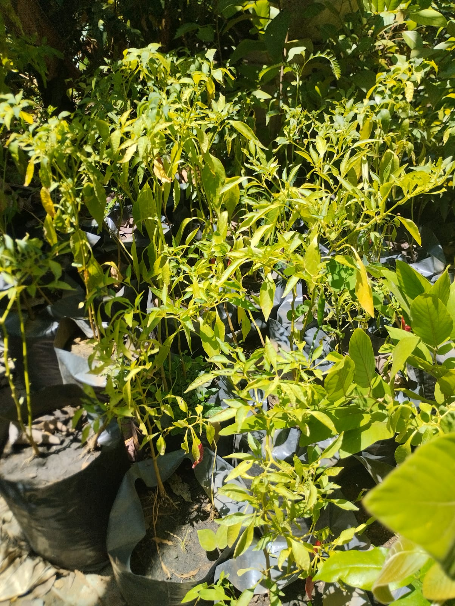
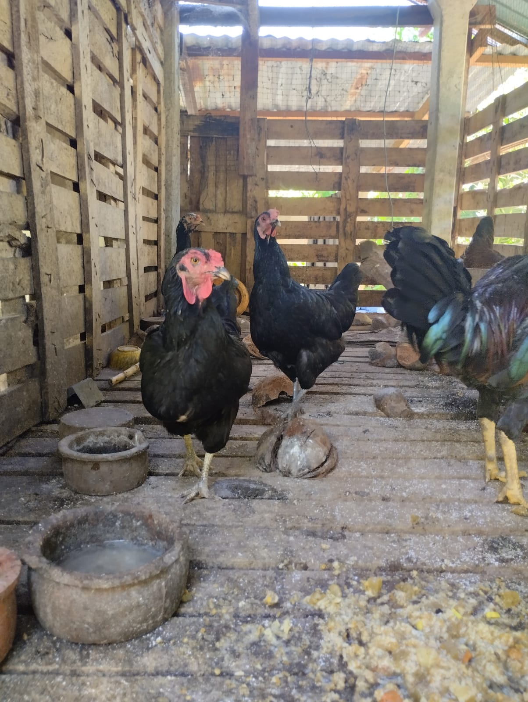
LET ITgrow
Why choose Mevaa Organic Farm?
Local plants &
landscaping.
A local Batticaloa farm and plant supplier, focused on organic farming and supporting home and commercial gardens.
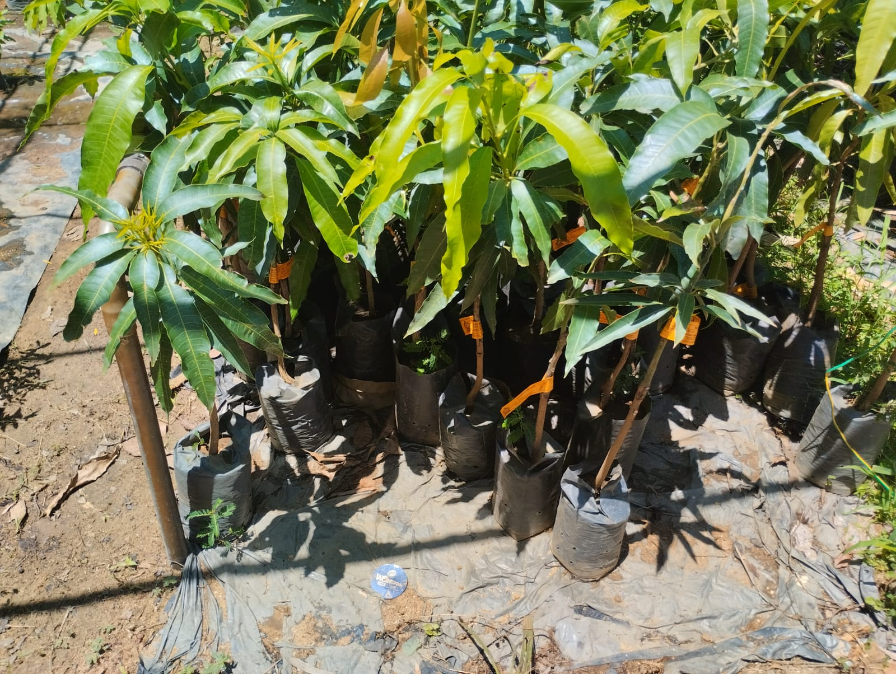
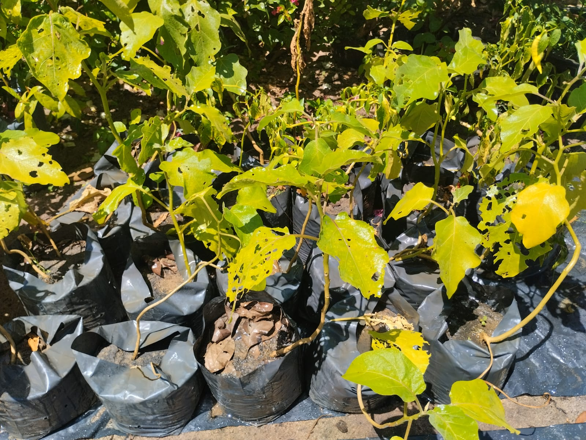
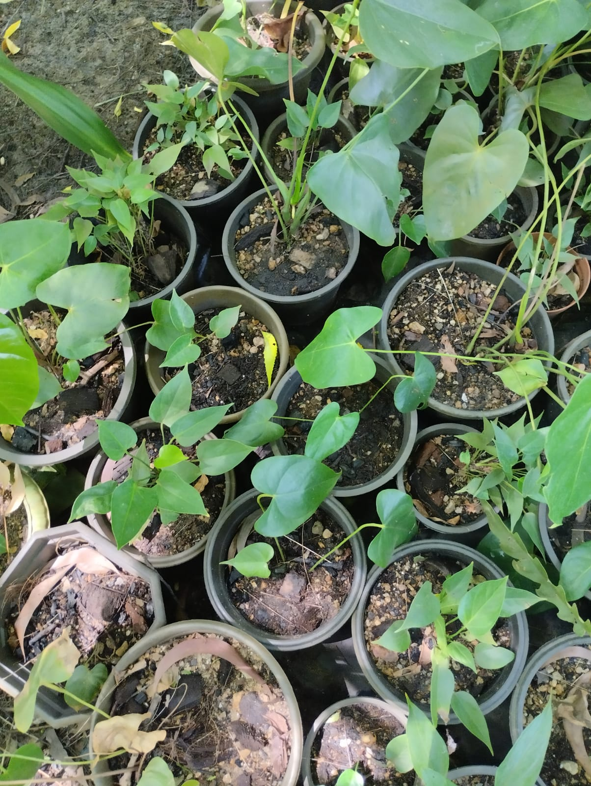
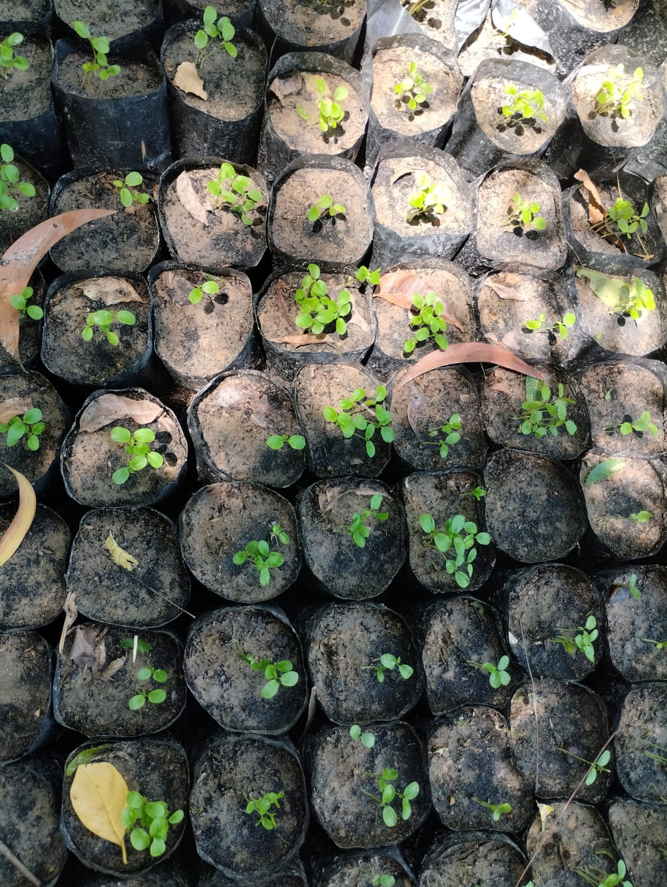
Visit Mevaa in Batticaloa
Visit Mevaa
in Batticaloa.
Visit Mevaa Flower Garden in Batticaloa to explore flower and gardening plants. Visit Mevaa Organic Farm to explore farming activities, plants, vegetables and fruit trees.
Batticaloa, Sri Lanka
A greener day starts here
Grow Green.
Live Better.
Visit Mevaa Organic Farm in Batticaloa for plants, farming activities, vegetables and fruit trees.